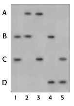

DNA Forensics Problem Set 2
Problem 9: Reconstructing a missing mother's profile
|
Forensic scientists from time to time must reconstruct the DNA profile for a missing person from analysis of DNA profiles of close relatives. In this case, a mother of four children is missing. All children have the same biological father. Results from a single locus probe DNA fingerprint analysis for the four children and their father are shown in the figure. Unfortunately, the forensic scientist forgot to label the lane with the father's DNA. Nevertheless, you are able to deduce that the alleles of the missing mother are: |
 |
Tutorial
Reconstructing the missing mother's profile| Each parent contributes one set of alleles to each child. The autoradiograph in this case contains DNA from four children and their father. Each child will share one band with the mother and one with the father. You can use the process of elimination to determine which lane contains the father's DNA. Then you know that the bands in the children not shared with the father must have been contributed by the missing mother. Thus, you can use the process of elimination to reconstruct the missing mother's profile. |
| Look at the bands in lanes 2 and 5. Lane 2 contains the alleles A and B, whereas lane 5 contains alleles C and D. Because these lanes have no bands in common, neither lane can contain the DNA of the father. Remember that each child will share one band with the father and one with the mother, whose DNA is not on this autoradiograph. | |
| Look at the bands in lanes 3 and 4. Again, there are no matching alleles so these lanes do not contain the father's DNA. Keep in mind that siblings do not necessarily inherit the same alleles from their parents, and will usually have different DNA profiles from one another. |
|
Having ruled out 4 of the 5 lanes, the father's lane is easy to identify. Check your work by matching the lane of the father with each lane for the four children. Again, one band from the father should match at least one band for each child. Once you have identified the alleles belonging to the father, determining the mother's genotype is easy-she has the 2 alleles that are found in their children but not in the father's profile. |


The Biology Project
University of Arizona
Monday, April 7, 1997
Contact the Development Team
http://www.biology.arizona.edu
All contents copyright © 1996. All rights reserved.